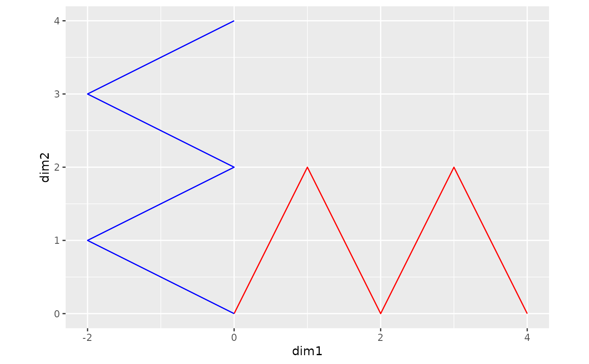
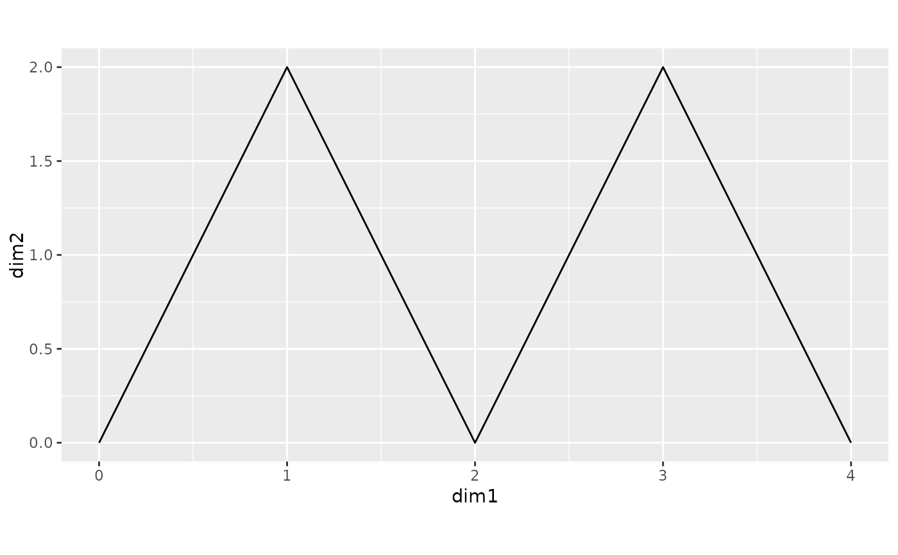

In order to compare word embeddings from different time periods, we must ensure that the embedding matrices are aligned to the same semantic space (coordinate axes). The Orthogonal Procrustes solution (Schönemann, 1966) is commonly used to align historical embeddings over time (Hamilton et al., 2016; Li et al., 2020).
Note that this kind of rotation does not change the relative relationships between vectors in the space, and thus does not affect semantic similarities or distances within each embedding matrix. But it does influence the semantic relationships between different embedding matrices, and thus would be necessary for some purposes such as the "semantic drift analysis" (e.g., Hamilton et al., 2016; Li et al., 2020).
This function produces the same results as by
cds::orthprocr(),
psych::Procrustes(), and
pracma::procrustes().
Arguments
- M, X
Two embedding matrices of the same size (rows and columns), can be
embedorwordvecobjects.Mis the reference (anchor/baseline/target) matrix, e.g., the embedding matrix learned at the later year (\(t + 1\)).Xis the matrix to be transformed/rotated.
Note: The function automatically extracts only the intersection (overlapped part) of words in
MandXand sorts them in the same order (according toM).
References
Hamilton, W. L., Leskovec, J., & Jurafsky, D. (2016). Diachronic word embeddings reveal statistical laws of semantic change. In Proceedings of the 54th Annual Meeting of the Association for Computational Linguistics (Vol. 1, pp. 1489--1501). Association for Computational Linguistics.
Li, Y., Hills, T., & Hertwig, R. (2020). A brief history of risk. Cognition, 203, 104344.
Schönemann, P. H. (1966). A generalized solution of the orthogonal Procrustes problem. Psychometrika, 31(1), 1--10.
Examples
M = matrix(c(0,0, 1,2, 2,0, 3,2, 4,0), ncol=2, byrow=TRUE)
X = matrix(c(0,0, -2,1, 0,2, -2,3, 0,4), ncol=2, byrow=TRUE)
rownames(M) = rownames(X) = cc("A, B, C, D, E") # words
colnames(M) = colnames(X) = cc("dim1, dim2") # dimensions
ggplot() +
geom_path(data=as.data.frame(M), aes(x=dim1, y=dim2),
color="red") +
geom_path(data=as.data.frame(X), aes(x=dim1, y=dim2),
color="blue") +
coord_equal()

# Usage 1: input two matrices (can be `embed` objects)
XR = orth_procrustes(M, X)
XR # aligned with M
#> dim1 dim2
#> A 0 0.000000e+00
#> B 1 2.000000e+00
#> C 2 -6.337448e-16
#> D 3 2.000000e+00
#> E 4 -1.267490e-15
ggplot() +
geom_path(data=as.data.frame(XR), aes(x=dim1, y=dim2)) +
coord_equal()

# Usage 2: input two `wordvec` objects
M.wv = as_wordvec(M)
X.wv = as_wordvec(X)
XR.wv = orth_procrustes(M.wv, X.wv)
XR.wv # aligned with M.wv
#> # wordvec (data.table): [5 × 2] (NOT normalized)
#> word vec
#> 1: A [ 0.0000, ...<2 dims>]
#> 2: B [ 1.0000, ...<2 dims>]
#> 3: C [ 2.0000, ...<2 dims>]
#> 4: D [ 3.0000, ...<2 dims>]
#> 5: E [ 4.0000, ...<2 dims>]
# M and X must have the same set and order of words
# and the same number of word vector dimensions.
# The function extracts only the intersection of words
# and sorts them in the same order according to M.
Y = rbind(X, X[rev(rownames(X)),])
rownames(Y)[1:5] = cc("F, G, H, I, J")
M.wv = as_wordvec(M)
Y.wv = as_wordvec(Y)
M.wv # words: A, B, C, D, E
#> # wordvec (data.table): [5 × 2] (NOT normalized)
#> word vec
#> 1: A [ 0.0000, ...<2 dims>]
#> 2: B [ 1.0000, ...<2 dims>]
#> 3: C [ 2.0000, ...<2 dims>]
#> 4: D [ 3.0000, ...<2 dims>]
#> 5: E [ 4.0000, ...<2 dims>]
Y.wv # words: F, G, H, I, J, E, D, C, B, A
#> # wordvec (data.table): [10 × 2] (NOT normalized)
#> word vec
#> 1: F [ 0.0000, ...<2 dims>]
#> 2: G [-2.0000, ...<2 dims>]
#> 3: H [ 0.0000, ...<2 dims>]
#> 4: I [-2.0000, ...<2 dims>]
#> 5: J [ 0.0000, ...<2 dims>]
#> 6: E [ 0.0000, ...<2 dims>]
#> 7: D [-2.0000, ...<2 dims>]
#> 8: C [ 0.0000, ...<2 dims>]
#> 9: B [-2.0000, ...<2 dims>]
#> 10: A [ 0.0000, ...<2 dims>]
YR.wv = orth_procrustes(M.wv, Y.wv)
YR.wv # aligned with M.wv, with the same order of words
#> # wordvec (data.table): [5 × 2] (NOT normalized)
#> word vec
#> 1: A [ 0.0000, ...<2 dims>]
#> 2: B [ 1.0000, ...<2 dims>]
#> 3: C [ 2.0000, ...<2 dims>]
#> 4: D [ 3.0000, ...<2 dims>]
#> 5: E [ 4.0000, ...<2 dims>]